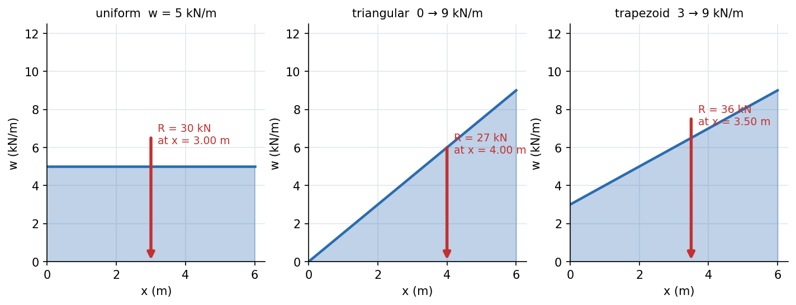

Engineering Mechanics · Statics · 3 min read
Distributed Loads and Equivalent Point Loads
Real loads (snow on a roof, water on a dam, a book on a shelf) are spread over a length, area or volume. For external equilibrium you may replace a distributed load by a single force: its magnitude is the area under the load diagram and it acts through the centroid of that area. The result is only valid for finding reactions: the stresses inside the beam still depend on the actual distribution.
The rule
For a line load (force per length) on :

Figure: Three common loads on a m span. Uniform: kN at mid-span. Triangular kN/m: kN at m from the zero end (two-thirds of the way towards the big end). Trapezoid kN/m: kN at m from the lighter end.
| Load diagram | Magnitude | Acts at |
|---|---|---|
| Rectangle, intensity , length | ||
| Triangle, peak , length | from the zero end ( from the peak end) | |
| Trapezoid, ends | from the end |
For composite diagrams split into rectangles and triangles; the centroid rules are in Centre of Mass and Centroids and Composite Bodies and Cutouts.
🎯 Predict first: a triangular load is largest at the right end. Which support carries more, and by how much?
The right support. With kN at m from the left (zero) end of a m beam: kN and kN. The right one carries twice as much.
Method
- Draw the load diagram and split it into rectangles and triangles.
- Compute each area (the equivalent force) and each centroid (its line of action).
- Treat these as point loads in the equilibrium equations for the reactions.
- Remember to go back to the real distribution when you need shear and moment inside the member (Relations Between Load, Shear, and Moment).
Worked example
🔬 Simply supported m beam carrying the triangular load kN/m (zero at A)
kN at m from A. : kN; kN. Check: moments about B with the equivalent load m from B: ✓. Peak bending moment (inside) is where shear is zero: at m; this uses the actual distribution, not the point load.
⚠️ Putting the equivalent load at the middle of a triangle
It acts at the centroid of the load diagram, two-thirds from the zero end, not at mid-span. This error alone moves a reaction by 33%.
💥 Using the equivalent point load for internal forces
Cutting the beam at and using the full point load gives the wrong shear and moment. Replace only the part of the load on the piece you keep.
Quick quiz
Q1. A uniform load kN/m acts over m of a m beam, starting m from the left end. What is the equivalent force and its position?
kN at m from the left end.
Q2. What is the hydrostatic force on a vertical dam wall of height and width in water?
The load diagram is a triangle (pressure ): at above the base (Hydrostatic Force on Plane Surfaces and Centre of Pressure).
Connections
- Prerequisites: Free-Body Diagrams and Equilibrium of Rigid Bodies
- Cross-domain: Hydrostatic Force on Plane Surfaces and Centre of Pressure (the same triangle rule), Shear Force and Bending Moment Diagrams, Centre of Mass and Centroids
- Next: Dry Friction
Self-check
Metadata
- Status: draft · Type: concept · Difficulty: beginner–intermediate
- Course map: Engineering Mechanics - MOC